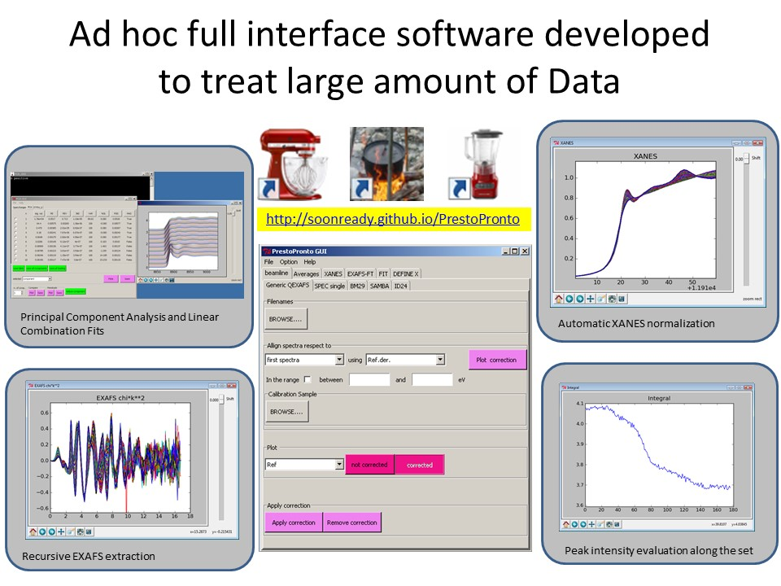
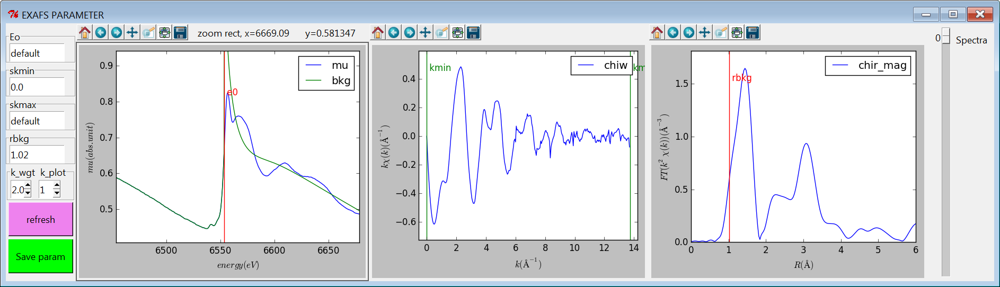

Prestopronto
The software PrestoPronto (from Italian “soon ready”) consist to a full graphical user interface (GUI) program aimed to execute the analysis of a large X-ray Absorption Spectroscopy (XAS) data sets. Written in Python, the software has an intuitive GUI and can be run by source code (Windows, MAC, UNIX) or using a compiled version (in this case, only for Windows). It is free and open source software.

The code is able to read big dataset, apply calibration and alignment corrections, and perform classical data analysis, from the extraction to the EXAFS fit using as engine the code Larch. The package includes also GUI´s to perform Linear Combination Fit, Principal Component Analysis (PCA) and Iterative Target Transformation Factor Analysis (ITTFA), a procedure to align theoretical components obtained from PCA analysis to the experimentally measured. The main benefit of this code is allow to follow in real time the evolution of time- or space-resolved experiments coming from Quick-EXAFS (QEXAFS) and dispersive EXAFS beamlines. The present version the software adopted a flexible general input method for ASCII files.
The parameter selection for XANES, EXAFS, and FT is interactive

Download Releases
Installation files could be download here
Authors and Contributors
Carmelo Prestipino (@Prestipino)
Support or Contact
Having trouble with Pages? Check out our documentation or contact support and we’ll help you sort it out.